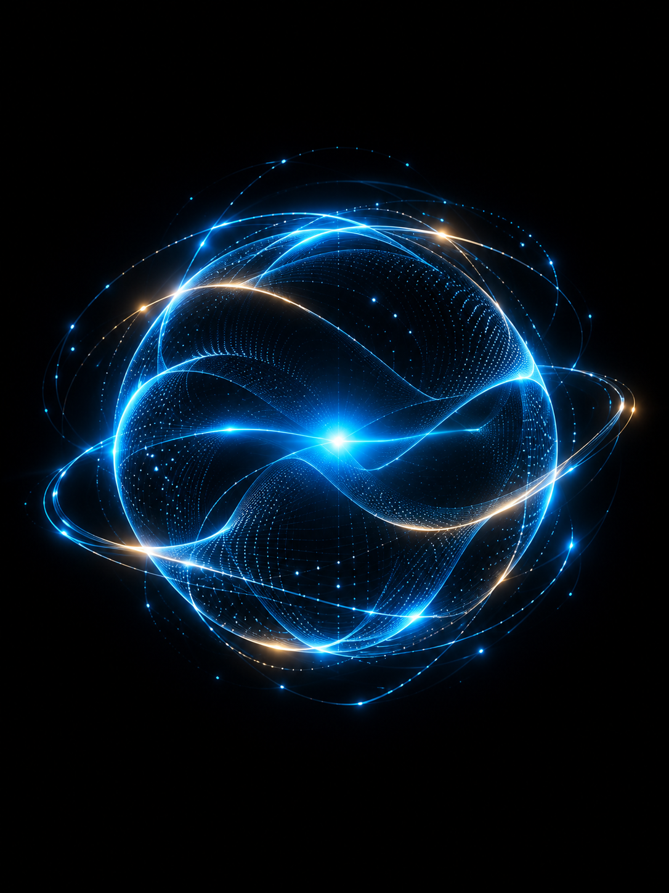

AVNIVO YUJIN — Phase 6.9.2 visual correction / stage 1
Static vector reconstruction from traced reference light lines. No animation, no GPU engine, no original image used as a background.


Method: cyan/gold and luminance masks → vector contour bands → hand-calibrated Bézier accents
→ measured dot field → vector core. The dotted weave is measured from the reference with local-maximum
detection and drawn as vector circles. The render contains no <image> element and no raster
background. This is stage 1 only and awaits design approval. See README.md for limitations.